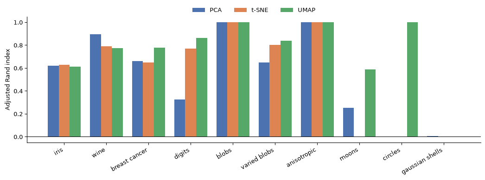

Default maps win on MNIST-like digits and collapse on moons and shells, and neither method has a loss that could have said so in advance
PCA minimizes a reconstruction error whose value is comparable across settings. UMAP and t-SNE minimize a graph objective they rebuild from the same settings being tuned, so no loss can choose a setting or flag a bad map. On ten canonical clustering datasets, default UMAP and t-SNE score anywhere from chance to near-perfect, and the ranking flips between datasets.
Machine Learning
Statistics
Author
Ravi Kalia
Published
November 22, 2026
Ten Datasets Against UMAP and t-SNE
This post compares default UMAP and t-SNE with PCA on ten labeled clustering datasets, so the reader can see how much a reported grouping depends on the method that drew it.
A UMAP plot is easy to believe. Points gather into islands, the islands sit apart, and the eye supplies the conclusion: these are groups. The same picture appears when the grouping is an artifact of n_neighbors=15, because the picture carries no number that says which it is.
1 The missing loss
PCA minimizes squared reconstruction error over all rank-\(k\) subspaces. The target is fixed by the data, so every implementation returns the same subspace, and the error is comparable across runs.
PCA: minimizes squared reconstruction error, a quantity that means the same thing before and after a setting changes.
t-SNE: minimizes KL divergence between pairwise similarities in the original space and in the map. Original-space similarity depends on perplexity, so changing perplexity changes the target.
UMAP: minimizes fuzzy-set cross-entropy against a neighborhood graph. The graph depends on n_neighbors and the metric, so changing either rebuilds the target.
Only PCA has a loss whose value survives a change of settings. A t-SNE run at perplexity 5 and one at perplexity 50 minimize two different objectives, and neither reports a number that makes one preferable. There is no reconstruction error to hold data out against, and no dev-set score with a fixed target to pick a setting.
The usual clustering workflow — fit on train, pick settings on dev, confirm on test — needs a target that stays put while settings change. UMAP and t-SNE do not supply one, so the workflow is never run, and plots are read with the confidence it would have earned.
2 Ten datasets
Four sets are real and labeled: iris (Fisher’s 1936 measurements of three iris species), wine (178 Italian wines, three cultivars), breast cancer (Wisconsin diagnostic, two classes), and digits (1,797 8×8 handwritten digits, ten classes — the same task as MNIST at lower resolution). They load from scikit-learn’s bundled loaders; nothing is fetched at render time. A wrong grouping here is a wrong subgroup in a biological or clinical dataset.
Six sets are synthetic, generated by sklearn.datasets with a fixed seed. Three are Gaussian mixtures: well-separated blobs, blobs with unequal variance, and blobs pushed through a random linear map. Two are non-convex — two moons and two concentric circles — standing in for groups a linear projection cannot keep apart. One is concentric Gaussian shells, standing in for nested structure with no obvious cluster count.
Embedding to 2-D and running k-means with the known class count gives an adjusted Rand index (ARI) for each map. ARI is 1 for a perfect match and 0 for chance agreement, so a convincing plot with tangled labels scores near zero. The labels are used only to score the map; none of the three methods sees them.
Figure 1: Adjusted Rand index of k-means on each 2-D embedding. Zero is chance agreement with the labels. UMAP and t-SNE run at library defaults; PCA uses two components.

Figure 2
No method wins, and the ranking flips between datasets:
PCA leads on wine, 0.895 against 0.788 for t-SNE and 0.774 for UMAP. UMAP leads on breast cancer, 0.779 against 0.659 for PCA.
On digits, UMAP reaches 0.861 and t-SNE 0.771, against 0.326 for PCA. This is the one setting where the nonlinear methods look miraculous.
t-SNE’s default perplexity of 30 scores 0.002 on moons, chance agreement, while UMAP scores 0.586 on the same points. On circles, UMAP scores 1.000 and both PCA and t-SNE sit at 0.000.
All three sit at chance on Gaussian shells: 0.007, 0.001, and 0.002.
None of the three embeddings carries a value that predicts this ordering. The only number a reader gets is the picture.
3 Every setting is valid
Change n_neighbors or min_dist in UMAP, or perplexity in t-SNE, and the map changes without ceasing to be a valid output of the algorithm. Because the objective is rebuilt from those settings, none of the resulting embeddings can be rejected by the loss that produced it.
Code
X, y = DATA["wine"]mds = [0.0, 0.1, 0.5, 0.99]nns = [5, 15, 50, 100]display(pd.DataFrame( [ [round(ari(umap.UMAP(n_neighbors=nn, min_dist=md, random_state=SEED) .fit_transform(X), y), 3)for md in mds ]for nn in nns ], index=pd.Index(nns, name="n_neighbors"), columns=[f"min_dist={md}"for md in mds],))X, y = DATA["iris"]display(pd.Series( { p: round(ari(TSNE(n_components=2, perplexity=p, random_state=SEED, init="pca").fit_transform(X), y), 3)for p in [5, 10, 30, 50] }, name="ARI",).to_frame())
min_dist=0.0
min_dist=0.1
min_dist=0.5
min_dist=0.99
n_neighbors
5
0.774
0.852
0.835
0.817
15
0.802
0.774
0.788
0.802
50
0.788
0.788
0.788
0.804
100
0.788
0.802
0.801
0.847
ARI
5
0.690
10
0.818
30
0.630
50
0.610
Sixteen UMAP settings on wine score between 0.774 and 0.852; on iris, t-SNE scores between 0.610 at perplexity 50 and 0.818 at perplexity 10. The spread is wide enough to change a conclusion, and every value in it is a legitimate run. There are as many defensible settings as there are values to try.
Changing only the seed does the same thing.
Code
X, y = DATA["moons"]display(pd.Series( { s: round(ari(umap.UMAP(n_components=2, random_state=s).fit_transform(X), y), 3)for s inrange(6) }, name="ARI",).to_frame())
ARI
0
0.586
1
0.593
2
0.565
3
0.580
4
0.996
5
0.524
Six UMAP runs on moons at otherwise identical defaults score between 0.524 and 0.996. One seed finds a near-perfect separation; the others merge the arcs. With no labels there is no way to tell the lucky run from the usual one, and UMAP’s own objective does not rank them.
4 Why MNIST fooled everyone
Digits is the showcase: ten balanced classes, 64 features, 1,797 samples, and clear separation between digit shapes. It is the closest thing here to MNIST, and it is the dataset on which UMAP and t-SNE look best — 0.861 and 0.771 against PCA’s 0.326. Papers illustrate these methods on exactly this kind of data, so the defaults are calibrated for a regime most clustering problems do not have.
Wine has 178 rows and three classes that overlap in feature space. Breast cancer has two classes separated by a handful of features. Moons and circles have two dimensions. On all of them the default map is a guess about scale, neighborhood size, and density that the method cannot check, and on moons the guess lands at chance.
5 Constraints
ARI on a 2-D map is one proxy, not a verdict on the method. Clustering in the original space, or choosing a metric that fits the data, can change every number above; ARI also rewards methods that happen to preserve the class count. The point is not that PCA is always right — it scores 0.000 on circles — but that PCA’s failure has a known cause in a linear projection, while a bad UMAP or t-SNE map has no loss that names it.